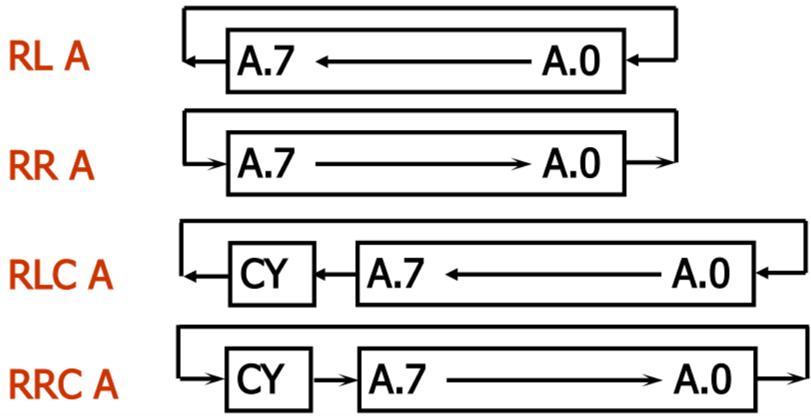

常用符号
Rn：工作寄存器R0~R7。Ri：工作寄存器中的R0、R1。#data：8位立即数。#data16：16位立即数。direct：片内RAM或SFR的8位地址。BIt：片内RAM或SFR的位地址。addr11/addr16：11位/16位目的地址。rel：补码形式的8位地址偏移量。(X)：对应地址单元中的内容。立即寻址：在操作数前加“#”作为立即数直接给出，
MOV A,#30H ;(A) = 30H 直接寻址：操作数是单元地址，真正被使用的是该地址中的值。
;30H: 00HMOV A,30H ;(A) = (30H) = 00H 寄存器寻址：对选定的工作寄存器R0~R7、累加器A、通用寄存器B、地址寄存器DPTR中所存的数进行操作。
;R0: 00HMOV A,R0 ;(A) = (R0) = 00H寄存器间接寻址：将寄存器(R0、R1)中的数作为地址，操作该地址对应的数。
;R0: 30H;30H: 00HMOV A,@R0 ;(A) = ((R0)) = (30H) = 00H基址加变址寻址：以DPTR或PC为基址寄存器，累加器A为变址寄存器，将“基础地址+偏移量”的结果作为ROM中的地址，操作该地址对应的数据。
MOVC A,@A + DPTR;(A) = (A + DPTR);该指令自身占用一个字节，PC指向当前指令的下一条地址MOVC A,@A + PC;PC = PC + 1, (A) = (A + PC)相对寻址：将PC当前值与指令第二字节数相加后，结果作为跳转指令的转移地址。执行当前指令后PC的值为基地址，第二字节所给值为偏移量（一字节带符号数）。
位寻址：以位为操作数，直接修改一位的数。
CLR C;Cy位清零通用传送指令MOV：将源操作数复制给目的操作数指向的存储单元中。
;MOV <目的操作数>,<源操作数>MOV A,#00H;MOV DPTR,#3001H ;唯一16位立即数传递指令，立即数的高8位(30H)送入DPH，低8位(01H)送入DPL片外RAM数据传递指令MOVX：
;只有以下四条;MOVX A,@DPTR;MOVX A,@Ri;MOVX @DPTR,A;MOVX @Ri,AVV读程序存储器指令MOVC
;只有以下两种MOVC A,@A+DPTRMOVC A,@A+PC字节交换指令XCH：将累加器A中内容与源操作数互换。
;XCH A,<源操作数地址>XCH A,Rn ;(A) <--> (Rn)XCH A,direct ;(A) <--> (direct) XCH A,@Ri ;(A) <--> ((Ri))半字节交换指令XCHD：将累加器A与原操作数低四位互换，高四位不变。
;XCHD A,<源操作数地址>MOV 30H,#03HMOV A,#10HXCHD A,30H ;(A) = 13H (30H) = 00H累加器高低数字节交换指令SWAP：累加器A中高、低四位互换。
;SWAP AMOV A,#30HSWAP A;(A) = 03H入栈指令PUSH：堆栈指针SP先加1，再将直接地址（只能是八位地址）所指单元复制给栈顶单元。
;PUSH directPUSH E0H ;累加器A的直接地址E0H（Keil会做优化，直接写PUSH A可正常运行但不合规）出栈指令POP：将SP所指内容先传给直接地址所指单元，再将SP减1.
;POP directPOP E0H ;注意栈遵循“先入后出原则”程序状态字PSW：内含C、AC、OV、P等标志位.
无进位加法ADD：将源操作数与累加器A中值相加，所得结果存入累加器A中。
;ADD A,<操作数>;操作数部分可取Rn/direct/@Ri/#dataADD A,#00H带进位加法ADDC：将“累加器A + 源操作数 + PSW进位位值C(运算前)”的值存于寄存器A中。
;ADDC A,<操作数>（与ADD相同）;对于16位数据的加法，先低八位ADD相加，再高八位ADDC相加;数1：低8位存30H、高8位存31H；数2：低8位存40H、高8位存41H。结果存50H（低）、51H（高）; 步骤1：加低8位（用ADD，无进位参与）MOV A, 30H ; A ← 数1低8位ADD A, 40H ; A ← 数1低8位 + 数2低8位（进位存C）MOV 50H, A ; 低8位结果存50H; 步骤2：加高8位（用ADDC，加上低8位的进位C）MOV A, 31H ; A ← 数1高8位ADDC A, 41H ; A ← 数1高8位 + 数2高8位 + 低8位的进位CMOV 51H, A ; 高8位结果存51H增量指令INC：对操作数对应数据自增1。
;INC <操作数>;操作数可为A/Rn/direct/@Ri/DPTR;除DPTR外，不会自动进位，溢出后清零INC A十进制调整指令DA：进行BCD码加法时，紧跟在ADD、ADDC后，对累加器中的值进行修正为正确的BCD格式。
DA A带进位减法指令SUBB：将“累加器A - 操作数 - 进位位C”的结果存入累加器A中。
x;SUBB A,<操作数>（与ADD相同）;不存在无借位的减法，如果需要，在SUBB前将标志位C清零即可
;要计算“A = 10H - 05H”，步骤如下：CLR C ; 先清0标志位C（此时C=0）MOV A, #10H ; (A) ← 被减数10HSUBB A, #05H ; (A) ← 10H - 05H - 0 = 0BH（结果正确）;多字节相减时，从最低字节减起（此时C清零），再依次高位相减（此时不要修改C值）减1指令DEC：对操作数对应数据自减1。
;INC <操作数>（与INC相同，但操作数中无DPTR）;操作数对应数据为0时，再自减溢出为最大值FFH乘法指令MUL：将累加器A和寄存器B中的8位无符号数相乘，所得16位乘积的低8位存入A中，高8位存入B中。
;MUL AB;只有这一种形式除法指令DIV：将“A / B”的结果，商存于A中，余数存于B中。
;DIV AB;只有一种形式逻辑与指令ANL：将目的操作数与源操作数的二进制位逐一按“全1则1，有0则0”的规则运算，将结果替换给目的操作数。
;ANL A,<操作数>;目的操作数为A时，源操作数可以为Rn/direct/@Ri/#data;ANL direct,<操作数>;目的操作数为direct时，源操作数可以为A/#data逻辑或指令ORL：将目的操作数与源操作数的二进制位逐一按“有1则1，全0则0”的规则运算，将结果替换给目的操作数。
;ORL A,<操作数>;目的操作数为A时，源操作数可以为Rn/direct/@Ri/#data;ORL direct,<操作数>;目的操作数为direct时，源操作数可以为A/#data逻辑异或指令XRL：将目的操作数与源操作数的二进制位逐一按“相同取0，不同取1”的规则运算，将结果替换给目的操作数。
;XRL A,<操作数>;目的操作数为A时，源操作数可以为Rn/direct/@Ri/#data;XRL direct,<操作数>;目的操作数为direct时，源操作数可以为A/#data清零CLR与取反指令CPL：前者将各位全置0；后者将各位全取反。
;只能对A进行该操作;CLR A;CPL A
;求一无符号数补码时，可通过先取反再自增实现CPL AINC A循环移位指令RL/RR；RLC/RRC：将A中数据不带进位循环左/右移；带进位循环左/右移。
;RL A;RR A;RLC A;RRC A
;所有位向左移动，最高位移至最低位，相当于将该值乘以2（不带进位时）MOV A,#F0H ;(A) = 1111 0000RL A ;(A) = 1110 0001
无条件转移指令
短转移指令AJMP：将该指令（2字节）运行后PC值高5位与操作数拼接，形成新的16位PC值，实现跳转。
;AJMP addr11;因11位地址2^11 = 2048字节，所以该指令转移范围为2kB长转移指令LJMP：直接将操作数幅值给PC，实现跳转。
;LJMP addr16;因为直接幅值，所以不受该指令自身影响，且范围为2^16 = 65536字节，即64kB相对转移指令SJMP：让“(PC) = (当前PC + 2) + rel(八位有符号偏移量)”，实现跳转。
;SJMP rel;该指令自身为2字节，rel限制范围为“-128 ~ 127”，主要用于短距离跳转SJMP $;可实现原地循环间接转移指令JMP：最终“(PC) = (DPTR) + (A)”，可覆盖64kB程序存储器。
;JMP @A + DPTR;以DPTR为固定地址，通过修改A的值实现动态分支跳转。
MOV DPTR,#TAB ;将TAB代表的地址给DPTRJMP @A + DPTR ;根据A值跳转不同地址
TAB: AJMP ROUT0 ;A为0时跳转到ROUT0程序中TAB+2: AJMP ROUT1 ;A为2时跳转到ROUT0程序中
ROUT0:...ROUT1:...条件转移指令
判A是否为0转移指令JZ/JNZ：A为0/不为0时跳转到指定位置，否则顺序执行。
;JZ rel;JNZ rel;转移到当前PC值 + 2 + rel地址处
;简化写法，A为0时直接跳转到LOOP标号处（编译器自动计算rel）JZ LOOP
LOOP:...比较不等转移指令CJNE：将两操作数比较，二者相等则顺序执行，不等则跳转。
;四种固定形式;CJNE A,#data,rel;CJNE A,direct,rel;CJNE Rn,#data,rel;CJNE @Ri,#data,rel减1不为0转移指令DJNZ：将操作数单元内容减1，再判断，若不为0则跳转；为0则顺序执行。
;DJNZ Rn,rel;DJNZ direct,rel
;主要用于固定次数的循环控制MOV R1, #05H ;设置循环次数为5LOOP: ;循环体代码（如延时操作） DJNZ R1, LOOP ;R1减1，非0则跳回LOOP继续循环调用与返回指令
长/短调用指令LCALL/ACALL：分别将当前PC（已经自增3/2后）值压入栈中保存（指向下一条指令），将地址幅值/拼接给PC，跳转到子程序。
;LCALL addr16;ACALL addr11 ;PC = 当前PC高5位 + addr11返回指令RET/RETI：将栈顶值一次弹出两次到PC的高、低8位，实现程序返回。
;RET ;子程序结束时返回原程序;RETI ;中断服务结束时，返回原程序同时恢复中断允许状态空操作指令NOP：什么也不干，停止一个机器周期，用于延时。
;NOP位寻址功能存储单元
位地址表达方式
bit伪指令自定义位名称。如SUB.REG bit RS1定义后，可用SUB.REG代替RS1操作该位。位传送指令MOV：通过位累加器C实现各个位数据之间的传递
;MOV C，bit;MOV bit,C位清零指令CLR：将指定位清零。
;CLR C;CLR bit位置1指令SETB：将指定位置1.
;SETB C;SETB bit位逻辑运算指令
位与指令ANL：将指定位的值与C做“与”操作，将结果给C。
;ANL C,bit;ANL C,/bit ;"/"符号是临时取反，使用原值取反后的值运算，不改变原值位或指令ORL：将指定位的值与C做“或”操作，结果给C。
位取反指令CPL：使指定位的值取反。
;CPL C;CPL bit位条件转移指令
判CY转移指令JC/JNC：CY为1/0时就转移，反之顺序执行。
;JC rel ;CY为1时跳转rel;JNC rel ;CY不为1时跳转rel（同样可以使用标号）判位变量转移指令JB/JNB/JBC：如果指定位为1/0/1则转移。
;JB bit,rel;JNB bit,rel;JBC bit,rel ;该位为1转移时，将该位清0伪指令：伪指令不是真正的指令，无对应的机器码，在汇编时不产生目标程序，只用于对汇编过程的控制。
ORG（起始地址伪指令）
ORG 0000H → 后续程序从程序存储器的 0000H 地址开始存放。END（汇编结束伪指令）
END后，会停止对后续内容的汇编。EQU（等值伪指令）
ABC EQU 50H → 后续代码中ABC等价于 50H。DATA（数据地址赋值伪指令）
VAR DATA 30H → VAR代表片内 RAM 的 30H 单元。DB（定义字节伪指令）
DB 12H, 34H, 'A' → 依次在当前地址存入 12H、34H、41H（'A' 的 ASCII 码）。DW（定义字伪指令）
DW 1234H → 依次存入 12H（高字节）、34H（低字节）。DS（定义存储空间伪指令）
DS 5 → 预留 5 个字节的空存储单元。BIT（位地址赋值伪指令）
FLAG BIT 00H → FLAG代表位地址 00H（对应片内 RAM 20H.0）。